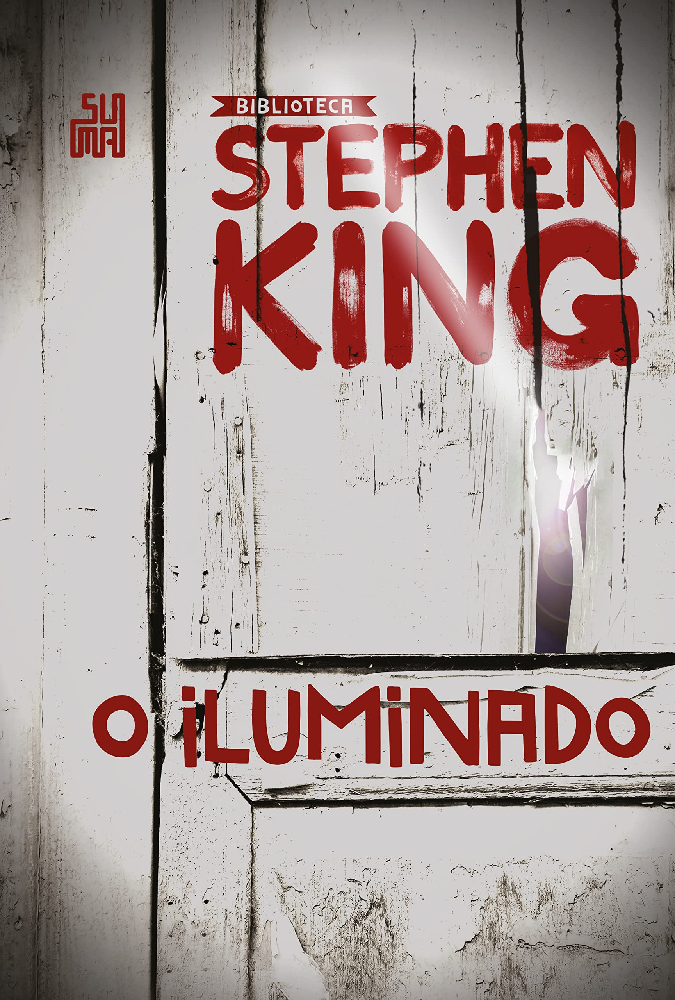
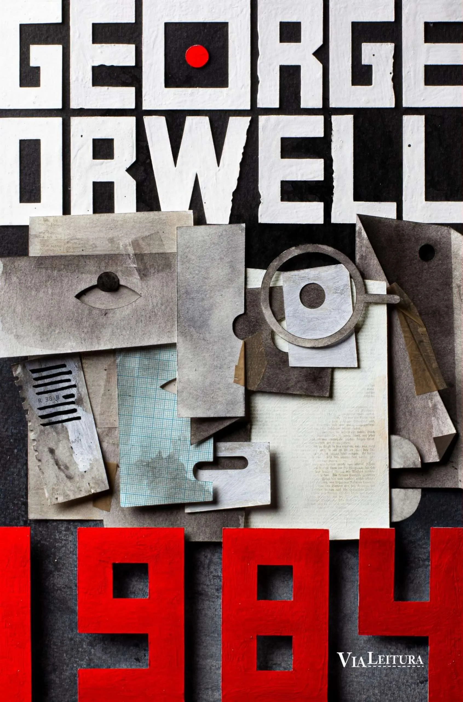
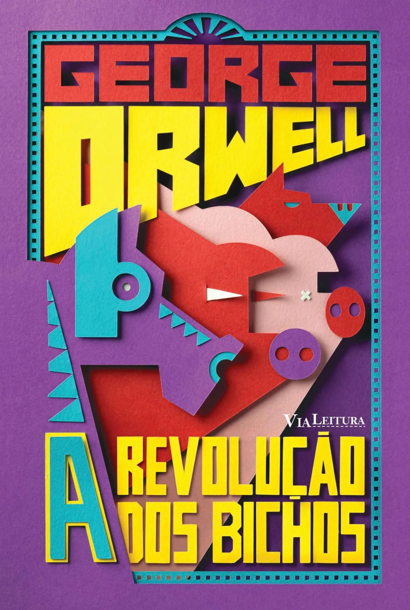

Minhas indicações de livros
Vale ressaltar que meu gosto para livros é completamente aleatório...

Sem sombra de dúvidas o livro mais louco e wtf que já li: por isso é incrível. Foi o primeiro livro de Stephen King que li e foi no período de pandemia, ou seja, somou-se tempo livre ao excesso e muita curiosidade, devorei ele em menos de uma semana, ótimo, perfeito, muito louco, divertido e bizarramente violento.

Esse eu morro e continuo dizendo: merecia uma adaptação melhor. O livro é sensacional, brilhante, mexe com você e você consegue entender o porquê dos personagens agirem como agem. O filme é um corta, corta sem nexo e não comove, a não ser a excelente atuação, mas atuação boa em filme picotado... É né...

Li puramente por recomendação da minha professora de redação, saudosa Bárbara Andrande - fica aqui a recomendação, quem tiver irmãos: @profbarbaraandrad. Enfim, não esperava muito, mas que livro! Brilhante e com um baita plot no finalzinho, infelizmente é daquelas histórias que quem você queria que vencesse não vence e por mais óbvio que seja, você gostaria que não fosse.

Livro incrível, li logo em sequência ao 1984, considero até superior pois é um livro que define a frase: "O sonho do oprimido é ser opressor", só essa frase já resume bem. Acho muito foda como o autor conseguiu representar sutilmente - ou não - trejeitos de personagens históricos e controversos.